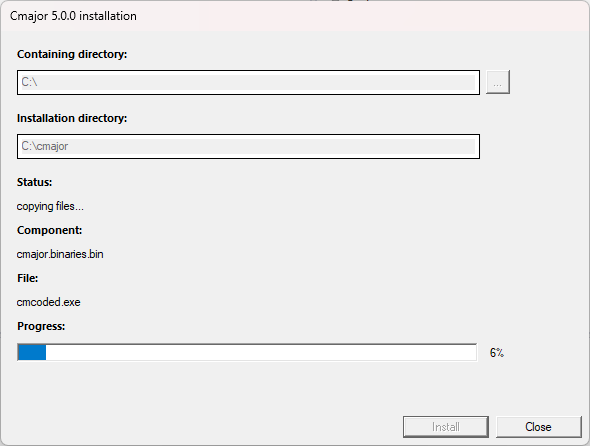
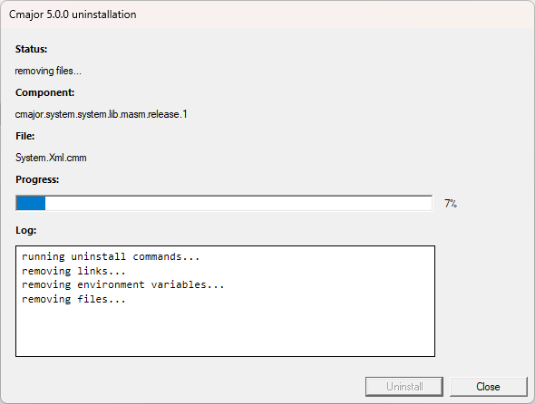

Installation
1 Installation on Windows
1.1 Prerequisites
1.2 Cmajor installation
Note: If you have a previous Cmajor version installed, you should uninstall it before installing this version.
Also in this case check also from the task manager, if you have "cmpms" process running. If you have, you should stop it before running the installation.
The "cmpms" process is the Cmajor port map server that is normally left running when cmcode IDE has been run.
Download the setup program and run it.
You can specify installation directory that is by default C:\cmajor.
Note: the compiler needs write access to installation directory and its subdirectories,
so C:\Program Files\ is not a good place to install.
The setup creates an environment variable CMAJOR_ROOT that points to the installation directory
and adds the CMAJOR_ROOT\bin directory to PATH. The setup adds a shortcut to the Cmajor Code
(IDE) to the desktop. The CMAJOR_ROOT environment variable is used by the Cmajor tools to locate Cmajor Unicode database and
system library source and binary files.

The 'Containing directory' is a directory that will contain the installation directory.
You can change it by clicking the '...' button on the right and selecting a directory from a folder dialog,
or by typing a directory path to the 'Containing directory' text box.
The installation directory is changed appropriately when changing the containing directory.
The name of the installation directory is by default 'cmajor' but can be changed to any name.
1.3 LLVM installation
1.4 Mingw-w64 installation
-
Goto WinLibs download page and
download the
GCC 14.1.0 Win64 without LLVM/Clang/LLD/LLDB package.
-
Extract it for example to the C:\mingw64 folder.
-
Insert the C:\mingw64\bin directory
to the PATH environment variable, so that cppcmc and cmbs can find g++ and cmdb can find gdb from there.
Note: the package may contain also clang++.exe that is a Mingw-w64 toolchain version of the Clang++ compiler. However the Cmajor compiler expects to find the
x64_64-pc-windows-msvc version of the clang++.exe, so add the C:\mingw64\bin path after the CLANG+LLVM 18.1.8 path.
You can execute command clang++ --version from the command prompt: it should print
clang version 18.1.8
Target: x86_64-pc-windows-msvc
1.5 Visual Studio installation
- Install Visual Studio (at least) Community Edition 2022 with C++ desktop workflow enabled.
- Open the file location of the x64 Native Tools Command Prompt for VS 2022 shortcut and select its properties.
- Insert the path of the vcvars64.bat after the %comspec% /k text to the cmajor/config/masm.config.xml file as the value of the path attribute of the vcvars64 element.
The default path is C:\Program Files\Microsoft Visual Studio\2022\Community\VC\Auxiliary\Build\vcvars64.bat
The MASM backend of the Cmajor compiler calls the vcvars64.bat and executes the msbuild.exe to compile generated asm files and link programs.
1.6 Uninstalling Cmajor
Cmajor can be uninstalled from the Windows Control Panel | Add/Remove Programs section.
When clicking the remove installation button, the Cmajor uninstaller program is started:

The uninstaller:
- Stops the cmpms (port map server) process.
- Removes Cmajor Code program shortcut from the desktop.
- Removes the Start Menu/Programs/Cmajor folder.
- Restores the old value of CMAJOR_ROOT environment variable.
- Removes the <installation directory>/bin directory from PATH.
- Removes installed files that have not been changed.
The uninstaller will not remove files that the installer did not install.
- Schedules the removal of the uninstaller program on reboot.
- Schedules the removal of the installation directory on reboot.
The installation directory will not be removed unless it is empty.
- Removes Cmajor installation information from the Windows registry.